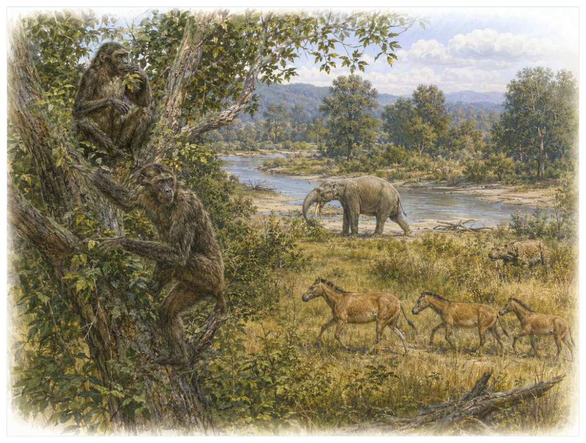

第16篇 · 渐新世与中新世：现代生态系统开始成形 · 第 56 章
马与象的分叉史：脚趾、牙齿、象鼻和迁徙
本篇主题:渐新世与中新世：现代生态系统开始成形
全球降温、海陆重组和草地扩张推动现代类群成形。

本章科学复原配图 （用于呈现结构与生态关系, 不替代化石照片、测量数据与系统发育证据。）
始新世至更新世对应的世界与现代地图和气候都不同。理解它不能从一只明星物种开始，而应从整个系统的限制开始。马的演化常被画成从小型多趾祖先到大型单趾现代马的直线，真实历史却有大量同时存在的支系。森林型马保留多趾和低冠齿，开阔环境支系逐步延长肢骨、增强中趾并发展高冠齿；三趾马在草原上长期成功，并非失败过渡。象类同样从小型早期长鼻目分化出恐象、铲齿象、嵌齿象、乳齿象、猛犸象与现代象，多种牙齿和象牙方案曾并存。
进入这个时代
生态系统的真实声音不是巨兽咆哮，而是持续的摄食、分解、搬运和繁殖。每一具尸体、每一层落叶和每一次沉积扰动都会重新分配资源。中新世草原上，三趾马群与单趾马近亲同时奔跑；河谷边，嵌齿象用成对长牙处理树皮和水生植物，恐象的下弯门齿承担不同功能。环境变化筛选某些组合，却没有把所有支系推向同一终点。
在“马与象的分叉史：脚趾、牙齿、象鼻和迁徙”所覆盖的时间里，不能把地理与气候当作固定背景。海陆位置、海平面、河流或植被结构会改变资源可达性，同一性状在不同地区可能得到完全相反的选择结果。
以马与象的分叉史：脚趾、牙齿、象鼻和迁徙为例，亲缘与外形不能混为一谈。相似身体可能来自共同祖先，也可能来自趋同；过渡类型也不是两类动物的机械拼接，而是当时能够正常摄食、运动和繁殖的完整生物。 在本章中，这一约束具体落在“开阔地奔跑使远端肢骨延长和侧趾减小更有利”这条关系上。
再从始新世至更新世的时间尺度看，演化的单位是种群而不是单个英雄。个体结构影响生存，但地理分布、繁殖速度、幼体死亡率和种群规模决定变异能否保留下来。化石中最醒目的成年骨架，未必是决定支系命运的阶段。 它与“马类趾数与弹性储能变化”共同决定了后续变化可以沿哪些路径发生。
图 56-1 马与象的演化都是分叉树，不是直线升级。
生态系统如何运转
把“开阔地奔跑使远端肢骨延长和侧趾减小更有利”放进食物网，可以看到它不是孤立行为。它会影响种群密度、栖息地使用和尸体进入分解链的速度，并把后果传给并未直接参与互动的物种。
围绕“开阔地奔跑使远端肢骨延长和侧趾减小更有利”，还要考虑空间异质性。一项在浅海、河谷或林冠有效的策略，移到深水、干旱内陆或开阔地便可能失去优势。因此同一支系常出现区域性扩张，而不是全球同步取代。对马与象的分叉史：脚趾、牙齿、象鼻和迁徙而言，这一后果还会与“高冠齿延长含尘草食下的使用寿命”相互放大或抵消。
理解“高冠齿延长含尘草食下的使用寿命”需要区分个体事件与长期压力。偶然一次捕食只改变个体命运，持续数千代的稳定关系才可能推动牙齿、外壳、感觉器官或生活史发生方向性变化。
围绕“高冠齿延长含尘草食下的使用寿命”，这一机制也会留下间接证据：咬痕、修复伤、足迹密度、粪化石、牙齿磨损和群落年龄结构分别记录不同环节。只有多种证据方向一致，行为解释才应上调可信度。 对马与象的分叉史：脚趾、牙齿、象鼻和迁徙而言，这一后果还会与“象鼻把嗅觉、取食、饮水和社交整合成灵活器官”相互放大或抵消。
“象鼻把嗅觉、取食、饮水和社交整合成灵活器官”还会改变可利用空间。一个支系若能进入新的水深、植被高度或沉积层，竞争会暂时减弱；随后追随者、捕食者和寄生者又会把新空间变成新的互动网络。
围绕“象鼻把嗅觉、取食、饮水和社交整合成灵活器官”，从演化树看，相似关系可能在远亲中反复出现。功能相近不必意味着近缘，而同一祖先结构也可能被后代改作完全不同的用途；生态解释必须与系统发育互相校验。对马与象的分叉史：脚趾、牙齿、象鼻和迁徙而言，这一后果还会与“开阔地奔跑使远端肢骨延长和侧趾减小更有利”相互放大或抵消。
关键演化创新
在“马与象的分叉史：脚趾、牙齿、象鼻和迁徙”中，围绕“马类趾数与弹性储能变化”，讨论“马类趾数与弹性储能变化”时，最重要的问题是它解除哪一道限制。只要原有身体在运动、摄食、呼吸或繁殖上受约束，能够稍微缓解约束的变异就可能积累，最终产生看似跃迁的结果。 它首先需要在始新世至更新世的生态条件下产生可测量收益。
就“马类趾数与弹性储能变化”而言，化石能较可靠地记录硬组织形态，却很少直接保留基因调控与短时行为。因此结构出现通常可信，最初用途和选择路径则应按证据标为主流解释或合理推测。 本章把它与“高冠齿和复杂釉质褶皱”并列，是为了显示复杂性状往往依赖多部分协同。
在“马与象的分叉史：脚趾、牙齿、象鼻和迁徙”中，围绕“高冠齿和复杂釉质褶皱”，从共同选择角度看，“高冠齿和复杂釉质褶皱”可能先服务旧功能，后来才参与今天最熟悉的用途。把最终功能倒推成起源原因，会把演化误写成有目的的工程。它首先需要在始新世至更新世的生态条件下产生可测量收益。
就“高冠齿和复杂釉质褶皱”而言，其宏观影响往往滞后于结构起源。一个创新可以先在小型、稀少支系中存在数百万年，直到环境变化或竞争者灭绝后才迅速扩张；“出现”和“成为主导”是两个不同事件。 本章把它与“长鼻目门齿、臼齿和鼻部重组”并列，是为了显示复杂性状往往依赖多部分协同。
在“马与象的分叉史：脚趾、牙齿、象鼻和迁徙”中，围绕“长鼻目门齿、臼齿和鼻部重组”，讨论“长鼻目门齿、臼齿和鼻部重组”时，最重要的问题是它解除哪一道限制。只要原有身体在运动、摄食、呼吸或繁殖上受约束，能够稍微缓解约束的变异就可能积累，最终产生看似跃迁的结果。 它首先需要在始新世至更新世的生态条件下产生可测量收益。
就“长鼻目门齿、臼齿和鼻部重组”而言，这也提醒我们不要寻找单一关键基因。复杂性状由多个组织和调控网络协调，改变任何一环都可能产生不同结果，演化路径因此呈树状而非直线。 本章把它与“马类趾数与弹性储能变化”并列，是为了显示复杂性状往往依赖多部分协同。
生命群像：把物种放回生态网络
始祖马（Sifrhippus）
始祖马（Sifrhippus）是早始新世的一名真实生态成员，而不是通往后代的抽象过渡。它约有约家猫至小犬大小，以森林中小型浏览者的方式获取资源；多趾足、低冠齿和短肢适合柔软地面与叶食反映了其祖先历史与局部选择压力共同留下的结果。
对始祖马而言，它既可能是捕食者、植食者或工程者，也同时是其他生物的猎物、竞争者和分解资源。一次取食只是一瞬，长期生态影响来自成千上万个体反复搬运营养、改变植被或扰动沉积物。体型越大，这种工程效应通常越明显，但恢复速度也常越慢。 这使“多趾足、低冠齿和短肢适合柔软地面与叶食”不能脱离其森林中小型浏览者角色来理解。
判断它的生活方式时，研究者首先使用牙齿同位素显示古新世-始新世极热事件中体型快速变化，因果涉及温度与食物。随后会检验替代解释：同样的牙是否也能处理其他食物，同样的骨骼比例是否由年龄造成，同一骨层是否来自群体生活还是灾难性聚集。排除过程比贴标签更重要。
由始祖马这个案例看，过去的复原常受完整现代动物模板影响，新材料则迫使研究者接受更陌生的身体比例或生活方式。最稳妥的表达是保留估计区间，并明确哪些软组织、颜色和社会行为仍属合理推测。 它在早始新世留下的记录，因此同时是第56章所讨论的形态史和生态史的一部分。
中新马（Merychippus）
若把镜头从时代拉近到个体，中新马（Merychippus）会首先进入视野。它生活于中新世，体型约约小马大小。作为开阔地草食或混合食者，它依靠高冠齿、增强中趾和群体生活可能性代表草地适应与环境和其他生物发生关系。
对中新马而言，成年体型往往主导复原，但幼体可能使用完全不同的食物和栖息地。若成长阶段跨越多个生态位，种群就同时依赖多套环境；其中任一环节中断都可能导致长期衰退。化石骨床的年龄结构因此比单具最大标本更能说明生态。这使“高冠齿、增强中趾和群体生活可能性代表草地适应”不能脱离其开阔地草食或混合食者角色来理解。
关于它的直接依据是：仍有三个着地脚趾，不是通向单趾的半成品；食性因种和地区而异。研究者还必须确认骨骼是否属于同一个体、是否被水流搬运、压扁是否改变比例，以及不同大小是否只是成长阶段。只有解剖、地层和功能证据相互一致，复原才可上调为高可信。
由中新马这个案例看，它在生命史中的价值不在于离现代形态还有多远，而在于证明这一身体组合曾真实可行。即使没有直系后代，支系也可能在当时持续繁盛，并通过捕食、植食或栖息地工程改变其他生命的选择环境。 它在中新世留下的记录，因此同时是第56章所讨论的形态史和生态史的一部分。
三趾马（Hipparion）
三趾马（Hipparion）存在于中新世至更新世。现有材料显示其大小约约现代小马大小，生态位置接近广布草原奔跑植食者。优势中趾承重、侧趾保留，长期在欧亚非繁盛让它成为理解本章主题的合适案例，但不意味着同一类群所有成员都采用相同策略。
对三趾马而言，这种生活方式还会反向塑造环境。摄食改变植物或猎物结构，足迹和掘穴改变沉积，尸体和排泄物把营养集中到局部。生态位不是它进入的固定房间，而是它与其他生物共同建造并持续修改的关系网络。 这使“优势中趾承重、侧趾保留，长期在欧亚非繁盛”不能脱离其广布草原奔跑植食者角色来理解。
现有认识建立在侧趾可能在软地或快速转向中有功能，其灭绝涉及气候和竞争而非设计低劣之上。古生物学的可信度不是来自一件戏剧化标本，而是来自多件标本、多个地点和不同方法得到相容结果。新发现若改变比例或分类，并非此前研究毫无价值，而是证据边界被重新画清。
由三趾马这个案例看，从生态尺度看，它与本章其他成员共同维持一张网络。任何“最强”排名都会遗漏资源供应、幼体死亡、疾病和气候脉冲；真正决定长期成功的是种群能否在波动中不断完成繁殖。 它在中新世至更新世留下的记录，因此同时是第56章所讨论的形态史和生态史的一部分。
莫湖兽（Moeritherium）
在晚始新世，莫湖兽（Moeritherium）以约约大型猪至河马幼体大小的身体参与食物网。它不是孤立的“明星生物”，而是北非湿地浏览长鼻目；短四肢、较后置鼻孔和小型门齿显示早期象类尚无现代象外形决定它能利用哪些资源，也决定必须承担哪些成本。
对莫湖兽而言，相似环境可能让远亲出现相近轮廓，但内部结构会保留祖先限制。比较它与现代类比时，应只借用可检验的功能，不把现代动物的行为、社会制度或代谢水平整套复制到古生物身上。 这使“短四肢、较后置鼻孔和小型门齿显示早期象类尚无现代象外形”不能脱离其北非湿地浏览长鼻目角色来理解。
支持该解释的材料包括半水生解释有同位素与骨骼支持但并非现代河马式，象鼻长度未知。若不同证据出现冲突，应优先报告范围而不是强行给出单值。例如体长会随参照类群变化，运动能力会随软组织假设变化，系统位置也会随新增性状重新计算。
由莫湖兽这个案例看，它也展示专门化的双面性：结构在稳定环境中提高效率，却可能在气候、食物或竞争格局突变时限制转向。灭绝不是对设计的道德评分，而是性状、地理范围和偶然事件相遇后的历史结果。 它在晚始新世留下的记录，因此同时是第56章所讨论的形态史和生态史的一部分。
恐象（Deinotherium）
认识恐象（Deinotherium）要先放弃静态骨架印象。它生活在中新世至更新世早期，约可达4米肩高，日常任务是作为大型森林与开阔林地浏览者维持能量与繁殖。下颌一对向下弯曲门齿形成与现代象不同方案只是这一整套生活史中最容易化石化的部分。
对恐象而言，它既可能是捕食者、植食者或工程者，也同时是其他生物的猎物、竞争者和分解资源。一次取食只是一瞬，长期生态影响来自成千上万个体反复搬运营养、改变植被或扰动沉积物。体型越大，这种工程效应通常越明显，但恢复速度也常越慢。 这使“下颌一对向下弯曲门齿形成与现代象不同方案”不能脱离其大型森林与开阔林地浏览者角色来理解。
我们之所以能够作出上述判断，主要因为门齿用于剥树皮、挖掘或拉枝均有提出，缺少直接行为证据。单一结构通常有多种功能解释，所以还要查看磨损、病理、肌肉附着、沉积环境和近缘比较。计算模型能排除不可能姿势，却不能自动恢复没有保存的软组织。
由恐象这个案例看，面对仍有争议的细节，负责任的复原不是停止讲述，而是标注证据等级。形态、年代和亲缘可较确定，具体姿势、叫声、求偶和群猎则按材料降级；新标本会在这些边界内继续改写认识。 它在中新世至更新世早期留下的记录，因此同时是第56章所讨论的形态史和生态史的一部分。
嵌齿象（Gomphotherium）
嵌齿象（Gomphotherium）生活在中新世至上新世，已知体型约为约3米肩高。它在群落中的角色可概括为多环境大型植食者。最值得观察的结构是上下颌多对长牙与长臼齿展示长鼻目广泛辐射。这些结构不是为了后来时代而准备，而是在当时直接影响摄食、运动、防御或繁殖。
对嵌齿象而言，成年体型往往主导复原，但幼体可能使用完全不同的食物和栖息地。若成长阶段跨越多个生态位，种群就同时依赖多套环境；其中任一环节中断都可能导致长期衰退。化石骨床的年龄结构因此比单具最大标本更能说明生态。这使“上下颌多对长牙与长臼齿展示长鼻目广泛辐射”不能脱离其多环境大型植食者角色来理解。
其复原依赖不同嵌齿象类牙和食性差异大，旧分类常把多个支系混在一起。年代和保存形态通常属于较强证据，体重、速度、颜色和社会行为则需要额外假设。书中把这些层次拆开，是为了让读者知道哪些可视为事实，哪些仍应等待更多材料。
由嵌齿象这个案例看，它不是祖先链条上必须跨过的一格。演化树中同时存在许多近缘支系，只有少数留下后代；旁支化石同样关键，因为它们显示某组性状出现的顺序和可行范围。 它在中新世至上新世留下的记录，因此同时是第56章所讨论的形态史和生态史的一部分。
因果链：环境、生态与性状
在始新世至更新世，身体不是若干部件的简单相加。“马类趾数与弹性储能变化”只有与“长鼻目门齿、臼齿和鼻部重组”在供能、控制和发育上兼容，才可能稳定遗传；局部性能提高若超过呼吸、循环或支撑能力，整体反而失效。三趾马的优势中趾承重、侧趾保留，长期在欧亚非繁盛因此应放进完整身体比例中解释，而不是把某一器官单独夸大。生物力学模型可以估算受力和运动范围，组织学能限制生长速度，近缘比较能提示同源关系；三者相互校验，才有可能从静态化石走向一个能够活着完成日常活动的动物或植物。
种群层面的成功还要考虑波动，而不仅是平均状态。在资源丰富年份，“高冠齿和复杂釉质褶皱”带来的高性能可能迅速增加个体数；在低谷年份，维持该结构的成本又会放大死亡。若中新马拥有较广食谱或可迁移，便可能跨过低谷；若其高冠齿、增强中趾和群体生活可能性代表草地适应高度依赖单一环境，恢复就更困难。化石群落中的丰度峰值、体型变化和地理收缩能为这种“繁荣—压力—恢复”循环提供线索，但必须与采样偏差区分。对始新世至更新世的任何稳态描述，都只是长期波动中被岩层保存的一小段。
本章的因果链最终落在繁殖上。“高冠齿延长含尘草食下的使用寿命”改变个体获得资源和避开风险的方式，“马类趾数与弹性储能变化”改变身体能做什么，但只有这些差异持续影响配子、胚胎、幼体和成体留下后代的概率，演化频率才会跨世代变化。始祖马和中新马的化石常让人关注尺寸或武器，然而巢、蛋、芽孢、孢粉、幼体壳和成长线往往更接近选择真正发生的位置。理解马与象的分叉史：脚趾、牙齿、象鼻和迁徙，因此要把最壮观的成年结构重新接回完整生活史。
把“马类趾数与弹性储能变化”拆成成本与收益，可以避免把演化创新写成无条件升级。它可能扩大摄食、运动或繁殖的边界，却要付出组织材料、发育协调和日常维持的代价；“高冠齿和复杂釉质褶皱”又会改变这笔账在不同生命阶段的分配。对始祖马而言，多趾足、低冠齿和短肢适合柔软地面与叶食在成年阶段或许十分醒目，但种群能否延续仍取决于幼体是否能找到食物、是否有安全的生长场所以及环境波动后是否保留繁殖者。化石往往偏爱成年硬组织，因此书写始新世至更新世时必须主动补上这些不易保存却决定长期命运的环节。
从时间顺序看，“马类趾数与弹性储能变化”的最早记录不等于它立即改写生态系统。结构可能先以小幅变异出现在稀少支系中，经历很长的试验期，直到“开阔地奔跑使远端肢骨延长和侧趾减小更有利”所代表的资源条件或竞争格局改变，才出现可见的辐射。反过来，一个支系在化石记录中突然繁盛，也不证明关键结构刚刚产生；保存窗口打开、地理扩散或生态位释放都能造成类似图景。因此讨论始新世至更新世的创新时，本章把“首次出现”“功能完善”“多样化”和“成为生态主导”分成四个问题，避免用一个日期替代整段历史。
时代横截面：个体、种群与证据
证据强度也应逐句区分。连续牙齿和肢骨序列建立分叉树若直接记录形态或行为痕迹，可把某些可能性排除；牙釉质同位素追踪食谱与迁徙若来自模型或现代类比，则通常提供范围而非唯一答案。对三趾马的优势中趾承重、侧趾保留，长期在欧亚非繁盛，我们也许能高可信地描述结构，却只能以主流解释讨论功能，以合理推测讨论日常行为。把层级写出来不会削弱故事，反而让读者知道未来新发现最可能改动哪一部分。
把结构看作模块，可以解释为什么过渡类型常显得“新旧并存”。始祖马的多趾足、低冠齿和短肢适合柔软地面与叶食可能已经接近后来状态，而呼吸、繁殖或运动的其他部分仍保留祖征；中新马可能采用另一种组合达到相似功能。演化不要求所有部件同步改变，只要求每个阶段的完整个体能够生活和繁殖。正因如此，真实谱系会产生旁支、回退和多次独立试验，而不是教科书式直梯。
再把三趾马加入横截面，群落关系会从两者比较变成网络。它作为广布草原奔跑植食者，通过优势中趾承重、侧趾保留，长期在欧亚非繁盛连接资源与其他消费者；其数量变化可能同时影响始祖马和中新马，甚至改变分解链和营养循环。这样的间接效应很少能由一具骨架直接证明，却可以从物种共现、丰度、痕迹化石和环境指标中受到约束。马与象的分叉史：脚趾、牙齿、象鼻和迁徙的生态复原因此需要群落数据，而不只是著名标本的精细解剖。
地理同样会拆散看似整齐的时代标签。始新世至更新世并不是全球同时拥有同一种气候与群落：海盆深浅、纬度、山脉、河流和大陆隔离会让始祖马、中新马与三趾马的分布错开。一个支系可能在某地区衰退、在另一地区成为避难所；后来扩散又会造成化石记录中的“重新出现”。因此本章的代表物种用于说明机制，而不意味着它们都在同一地点同一时刻相遇。
“谁取代了谁”常把复杂过程压成单线叙事。在马与象的分叉史：脚趾、牙齿、象鼻和迁徙中，即使中新马在某层位后减少、三趾马随后增加，也可能是二者分别响应气候或栖息地，而不是直接竞争导致淘汰。需要检查时间误差、地理重叠和资源相似度；只有三者都支持，替代关系才更可信。更多时候，生态系统通过功能重新组合过渡，旧支系与新支系会长期并存。
科学家为什么这样判断
“连续牙齿和肢骨序列建立分叉树”提供的是一类约束而非完整录像。它可能精确记录某一瞬间，却未必代表全年或整个物种；也可能反映长期平均，却无法指出单次行为。把不同时间尺度的证据组合，才能重建生态过程。
“牙釉质同位素追踪食谱与迁徙”还需要与年代学绑定。只有事件先后关系可靠，才能讨论因果；若环境变化和生物响应的误差范围大量重叠，就应表述为相关或可能机制，而不是宣布已经证明。
“头骨鼻孔位置和肌肉附着推断象鼻演化”最有价值的地方，是它能排除某些流行复原。关节不允许的姿势、承重无法支持的速度、与沉积环境冲突的生活方式，都可以被证据淘汰；剩余模型仍可能不止一个。
在“马与象的分叉史：脚趾、牙齿、象鼻和迁徙”这一问题上，把上述方法合在一起，研究者才能从残缺材料走向受约束的复原。任何一条证据都可能受到成岩、污染、样本量或现代类比的限制；结论越具体，越需要多条独立证据指向同一方向，并与始新世至更新世的地层背景相容。
过去的图景与今天的证据
脚趾减少并不等于‘更高级’，在软地、森林或特定体型下，多趾可提高稳定。马类体型也曾多次增大和减小。莫湖兽常被画成半水生象祖先，但其生活方式和长鼻长度均不确定；象鼻几乎不化石化，只能从鼻孔位置、颅骨和现生发育逐步推断。
围绕“马与象的分叉史：脚趾、牙齿、象鼻和迁徙”，需要特别警惕新闻标题把“可能”“支持”改写成“已经证明”。古生物学很少能直接观察行为，越接近颜色、叫声、群居和捕猎策略，越应说明样本数量与替代解释。
对始新世至更新世的材料而言，争议持续还因为不同问题需要不同尺度。个体生物力学、种群生态和全球气候模型无法互相替代；一个模型能解释骨骼受力，不等于已经解释整个支系为何扩张或灭绝。
跨尺度观察
微生物底盘：宏体生态依赖微生物完成分解、固氮和碳硫循环。即使章节聚焦巨型动物，尸体最终仍由微生物和小型分解者处理；大灭绝后的恢复也往往先表现为生产和分解网络重建，而非大型动物立即回归。 在“马与象的分叉史：脚趾、牙齿、象鼻和迁徙”中，这一尺度具体连接了“开阔地奔跑使远端肢骨延长和侧趾减小更有利”与“马类趾数与弹性储能变化”，因而不能只从单个成年标本判断。
尺度错觉：百万年足以让微小遗传差异累积成巨大的身体变化，数万年的快速事件又可在地质记录中近似一条细线。把深时间压缩会制造“突然出现”的错觉，因此正文同时报告持续时间和证据分辨率。 在“马与象的分叉史：脚趾、牙齿、象鼻和迁徙”中，这一尺度具体连接了“高冠齿延长含尘草食下的使用寿命”与“高冠齿和复杂釉质褶皱”，因而不能只从单个成年标本判断。
能量账本：任何大型身体、快速运动或高代谢都必须由初级生产支撑。食物从生产者进入消费者时会损失大量能量，因此顶级捕食者种群必然远少于猎物。环境变化若先削弱生产端，高营养级通常最早出现繁殖失败；这比单次搏斗更能决定支系命运。在“马与象的分叉史：脚趾、牙齿、象鼻和迁徙”中，这一尺度具体连接了“象鼻把嗅觉、取食、饮水和社交整合成灵活器官”与“长鼻目门齿、臼齿和鼻部重组”，因而不能只从单个成年标本判断。
通向下一个时代
从本章走向下一阶段时，需要保留的不是一串物种名，而是一个因果链：环境改变可用能量与栖息地，生态关系筛选性状，性状又反过来改造环境。马和象的路线展示环境筛选与历史偶然如何共同作用。相似压力还会在远亲中反复产生流线体、翼、剑齿和蟹形身体，下一章把这种趋同放回整部生命史。
本章精选来源
- [R93] Mihlbachler, M. C. et al. Dietary change and evolution of horses in North America. Science 331, 1178-1181 (2011).
- [R94] Shoshani, J. & Tassy, P. Advances in proboscidean taxonomy and classification, anatomy and physiology, and ecology and behavior. Quaternary International 126-128, 5-20 (2005).
- [R95] Strömberg, C. A. E. Evolution of grasses and grassland ecosystems. Annual Review of Earth and Planetary Sciences 39, 517-544 (2011).
- [R96] Cerling, T. E. et al. Global vegetation change through the Miocene/Pliocene boundary. Nature 389, 153-158 (1997).
- [R97] Losos, J. B. Convergence, adaptation, and constraint. Evolution 65, 1827-1840 (2011).